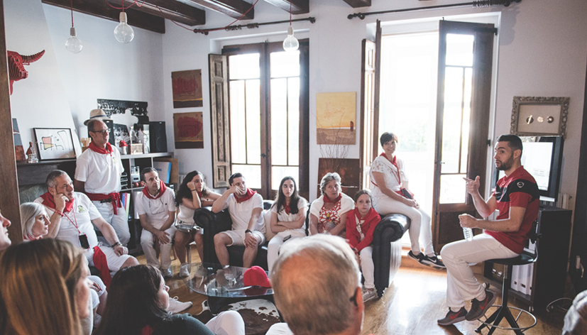

Otra forma de vivir San Fermín
San Fermín no es solo una sucesión de actos, sino una combinación de momentos que cambian de ritmo a lo largo del día. Desde la intensidad de la mañana hasta la energía de la tarde o la calma de la noche.
Por qué no todo el mundo lo vive igual
La mayoría de visitantes accede a la fiesta de forma espontánea, sin contexto ni planificación. Eso hace que muchas experiencias se queden a medio camino o dependan del azar.
Qué cambia cuando se diseña bien
Cuando se entiende la fiesta desde dentro, es posible conectar momentos, acceder a espacios concretos y construir una experiencia más completa, más fluida y más coherente con lo que buscas.
Cómo se pueden vivir estos momentos
Hay muchas formas de acercarse a San Fermín:
- De forma espontánea: dejándose llevar por el ambiente, con lo que eso implica.
- Reservando experiencias concretas: accediendo a momentos puntuales.
- Diseñando una experiencia completa: conectando diferentes momentos con sentido.
La diferencia no está en cada momento aislado, sino en cómo se encadenan entre sí.
Ejemplos de experiencias
Estas propuestas son solo una referencia de lo que se puede construir. Cada experiencia puede adaptarse o combinarse en función de lo que buscas.



¿Cómo se definen estas experiencias?
Al tratarse de propuestas personalizadas, no hay un formato único ni un precio estándar. Cada experiencia se construye en función de los momentos incluidos, el tipo de acceso y el nivel de acompañamiento.
A partir de una idea inicial, se plantean opciones adaptadas a lo que buscas.
Una forma diferente de vivir la fiesta
Aquí no se trata de elegir entre opciones cerradas, sino de entender qué te gustaría vivir y construirlo de forma coherente.
San Fermín tiene muchas capas. La diferencia está en cómo accedes a ellas.
Por qué hacemos esto
Muchas de estas experiencias forman parte de cómo hemos vivido siempre la fiesta.
Nuestro papel es ordenar, abrir y compartir ese acceso para que otros puedan vivirlo de una forma más completa.
Seguir descubriendo San Fermín
Estas experiencias conectan con distintos momentos de la fiesta.
Puedes vivir el inicio con el Chupinazo, la intensidad del encierro o la emoción de la Procesión.
También puedes acercarte a momentos más cercanos como los Gigantes o el cierre del Pobre de mí.
Porque San Fermín no es una experiencia única, sino una suma de momentos.